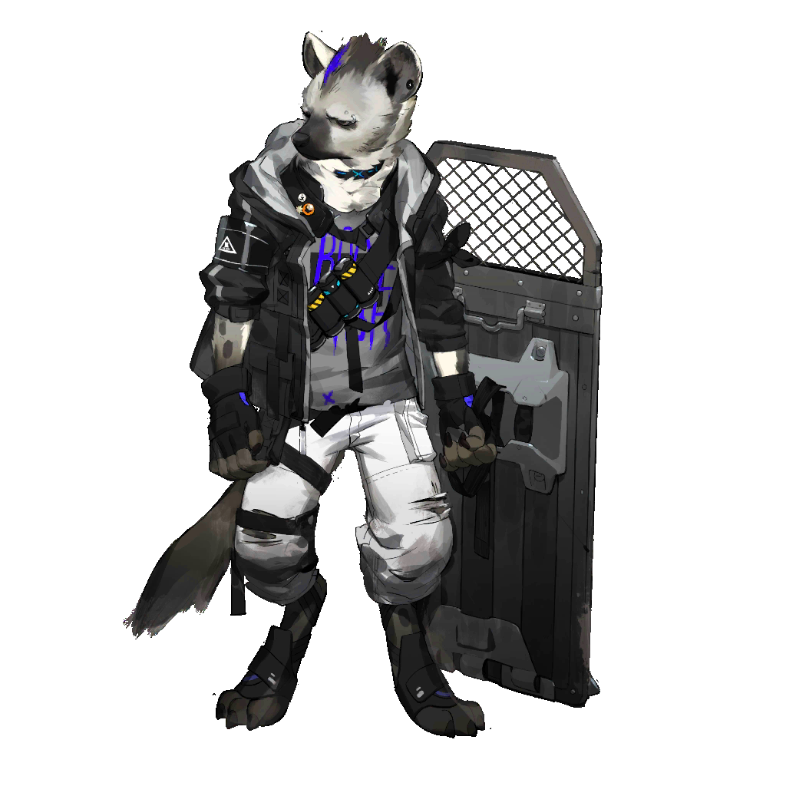

风，是这场混乱中唯一的主宰。
斑点正用他那面巨大的盾牌，艰难地为自己和身后的泡普卡撑起一片小小的、摇摇欲坠的安全区。

斑点
咳、咳......麻烦死了！这沙子都要钻进我肺里了！月见夜，你那边怎么样了？！

月见夜
还行！最后两个沙盗已经被我解决了！你那边呢？泡普卡还好吗？
斑点
她好得很，一直躲在我后面，一粒沙子都吃不着！倒是你，解决完了就快点过来帮忙！我快顶不住了！
斑点
我的新漫画还在罗德岛等我，我可不想不明不白地死在这里！
月见夜
冷静点，斑点，再坚持一下，梓兰小姐和空爆一定会来支援的！

泡普卡
（好可怕......风沙好大......我什么都看不清了......）
泡普卡
（斑点哥哥......他的盾牌在晃......他快要顶不住了......）

泡普卡
（咦？那个人......是沙盗！他躲过了月见夜哥哥！）

泡普卡
斑点哥哥！
月见夜
斑点，小心身后！
斑点
什么？！
泡普卡
（他转不过来！来不及了！那把刀......那把刀要砍下去了！）
泡普卡
（不要——不要伤害斑点哥哥！）
一股奇特的、灼热的东西突然从她的眼底涌出。
她甚至来不及思考那是什么，只是遵循着本能，将那股力量对准了那个沙盗的方向。
一道几乎看不见的能量光束，从她的眼中一闪而过。
它没有击中任何人。
嗡——
一声仿佛来自大地之外的奇异嗡鸣响起，紧接着，一道无形的冲击波扩散开来。
月见夜
刚才那是什么？！
斑点
不知道！好像有什么东西炸了？喂！泡普卡，你没事吧？！

泡普卡
嗯......泡普卡没事......
泡普卡呆呆地站在原地，她自己也不知道刚才发生了什么。她只看到那个坏人飞了出去，斑点哥哥安全了。

空爆
......结束了？
梓兰
我们......回来了？

空爆
好像是......刚才那场狩猎......那个“御轮”......宝巫迦......时间过去了多久？
一声清脆的、与这片沙漠格格不入的叫声，从她们身后响起。

政宗
这里......难道是远方的封印之地喵？

义经
（失望的低鸣）

空爆
政宗？！义经？！

梓兰
看来这不是一场梦。

月见夜
梓兰小姐！空爆！你们跑哪里去了！
斑点
喂——！你们两个，刚才失联了一分多钟，我还以为你们被沙子埋了呢！
梓兰和空爆回头看去，只见自己熟悉的月见夜、斑点和泡普卡正朝她们跑来。
月见夜
刚才突然起了一阵怪风，然后你们就失联了，我们都快急死了！还好战斗已经结束了。
斑点
何止是衣服，你们身后的云兽和牙兽又是从哪来的？看起来伙食很好的样子。

泡普卡
梓兰姐姐！空爆姐姐！你们没事，真是太好了！
看着眼前这三个自己再熟悉不过的“问题儿童”，又看了看身后那两个新伙伴，梓兰感到哭笑不得。
一瞬间，她想起了独立自主的宝巫迦，想起了那个开朗的斑弥罗，想起了那个为了守护重要之人和国家而变得固执的月见夜。
她觉得自己变了，变得温柔了一些。

梓兰
具体的事情我会慢慢跟你们说。

梓兰
总而言之，月见夜，斑点，泡普卡，你们没事就好。这次任务的混乱，是我的指挥失误，让你们担心了，辛苦你们了。
月见夜
......
斑点
......

泡普卡
......
梓兰
嗯？怎么了？
斑点
喂喂，你是谁啊？你不是我们的队长吧？我们的队长只会叹着气骂我们是问题儿童。
月见夜
确实......这温柔的语气，这坦率的道歉......小姐，你是不是被沙尘暴里的什么东西附身了？
月见夜
我认识几个懂秘术的姐妹，要不我们去看一看吧？

空爆
啊哦。
梓兰
......

梓兰
把刚才发生的所有事情给我一五一十地写清楚！还有，月见夜！你又去哪里认识了懂秘术的姐妹，嗯？

月见夜
报告长官，此事说来话长！
斑点
啊......这回是梓兰没错了。那我继续看漫画了，月见夜，等你搞清楚发生了什么后，记得跟我说一声。
斑点
最好三十字以内。

空爆
嗯，有的时候我也觉得有些事真怪不了梓兰姐。

泡普卡
梓兰姐姐！
梓兰
唉，还是我们家的泡普卡最好了。

空爆
对了，政宗。

政宗
喵？
空爆
这样吧，要不然，你们跟我们一起，先回我们的家吧？
政宗
你们的家喵？

空爆
没错，是一个叫罗德岛的好地方。

宝巫迦
西城的市场可以再扩大一些，斑弥罗，你的那些新发明，也该让国民们都见识一下了。

斑弥罗
没问题，陛下！我最新改良的“全自动兔团子机”，保证能让大家随时随地都吃到美味的团子！

月见夜
在此之前，我认为还有一件事要做。我们应该在都城的中央广场上，为我们的英雄们建一座雕像。

宝巫迦
是啊......为了梓兰小姐、空爆小姐、政宗大人和义经大人，还有过往的“异兽猎人”们。

月见夜
但愿他们已经平安回到自己的家乡了。

宝巫迦
对了，如果可以的话，吾希望为“雷之主”也立一座雕像。

月见夜
这是为何？
宝巫迦
吾不是为了纪念它，或者可怜它......只是，为了记住它。
月见夜
......好。

月见夜
泡影国确实应当记住“雷之主”。
月见夜
我们能做的，就是将他们的故事，和这个国家的历史一起，永远流传下去。
斑弥罗
说起来，还真是有点想念他们啊。虽然空爆老是嘲笑我的发明，但没有她的武器，我的击龙枪也确实造不出来。
斑弥罗
还有政宗，那家伙虽然嘴碎，但给的东西都是真材实料......
宝巫迦
是啊......不知怎么的，虽然现在很和平，但总觉得......有些空落落的。
月见夜和宝巫迦的视线再次相遇，这一次，不再有隔阂与对立。
就在这时，一名武士神色古怪地走了进来。

武士
启禀陛下、将军......城外有两位猎人求见。

月见夜
猎人？来自哪里？
武士
她们说......她们来自遥远的大地——
宝巫迦心中一动，一种难以言喻的预感涌上心头。她快步走出议事厅，来到了城门前。
城门外，站着两个风尘仆仆的身影。
其中一人，身着一套如同紫色火焰般的优雅猎人套装，手持长弓，正警惕地打量着四周的环境。
而另一人，则一身青蓝色护甲，充满野性气息，背上背着一对巨大的剑盾，正一脸无聊地用脚尖踢着地上的石子。
她们的衣着、神态、武器......都和宝巫迦记忆深处的那两个人有一些出入。
但是，那两张脸，却是一模一样。

急躁的猎人
我听说这里有值得挑战的野兽，才跋山涉水过来的，你这家伙，该不会想和我抢吧？
冷静的猎人
我只是听说泡影国周边的野兽身上有非常稀有的素材，如果传闻属实，那就各凭本事。
急躁的猎人
哈，那敢情好！

宝巫迦
......梓兰小姐？
宝巫迦
......空爆小姐？
时空的撕扯感只是一瞬。
当雷狼龙再次睁开双眼时，扑面而来的，不再是泡影国地下遗迹那混合着尘土与“诅咒”的死寂气息。
是风。
是夹杂着潮湿泥土、青草芬芳和清冽水汽的风。是它自诞生之日起，就无比熟悉的风。
它抬起头，皎洁的月光穿过茂密的树冠，在布满青苔的地面上洒下斑驳的银辉。它听到了远处瀑布的轰鸣，听到了林间虫豸的鸣叫。
它回来了。
压抑在身体里十年的、属于巫女的那份沉重力量已经消失，纠缠在灵魂中那份污浊的“诅咒”也已烟消云散。
它发出一声悠长的、不再带有痛苦与愤怒的咆哮。那吼声不再是为了威慑，而是为了宣告——这片山林真正的王者，回来了。
它开始奔跑。
矫健的四肢在林间飞跃，利爪刨开熟悉的泥土，强壮的身躯撞开挡路的灌木。
它跃过湍急的溪流，在瀑布下驻足，任由冰凉的水花冲刷着自己满是伤痕的鳞甲，洗去那不属于这个世界的尘埃。
它循着记忆，找到了一处悬崖。那里是它的王座。它安静地卧下，将巨大的头颅枕在前爪上，金色的长尾如疲倦的蛇般，盘在身侧。
它闭上了眼睛，安然地陷入了沉睡。
......
啪。
一声轻微的树枝断裂声，让它的耳朵猛地一抖。
它瞬间睁开了双眼，兽瞳在黑夜中亮起，睡意荡然无存。
它听到了。
那是一种沉稳的、富有节奏的、属于两足生物的脚步声。一步，又一步，正不紧不慢地向这里靠近。
那脚步声中，没有恐惧，只有坚定。
雷狼龙缓缓地站起身，望向声音传来的方向，一个身影从树林的阴影中走出。
那是一个猎人，头戴着宽大的竹制斗笠，身上穿着红蓝相间的结云衣，脚下的木屐踩在岩石上，发出轻微而清脆的“嗒嗒”声。
他的手中，握着一把修长的太刀，刀身在月光下反射出内敛而锋利的光芒。
他同样看到了悬崖上的雷狼龙。
四目相对。
没有憎恨，没有恐惧。
雷狼龙的肌肉开始隆起，一缕缕金色的雷光开始在它蓝玉般的鳞甲上跳动、闪烁。它低下头，发出一声低沉的、充满了战意的咆哮。
这是一种古老的、刻在它血脉中的宿命。
它不理解何为“英雄”，也不在乎何为“牺牲”。
它只知道，在它的世界里，当一位强者，与另一位强者相遇时，战斗，便是唯一的，也是最高的敬意。